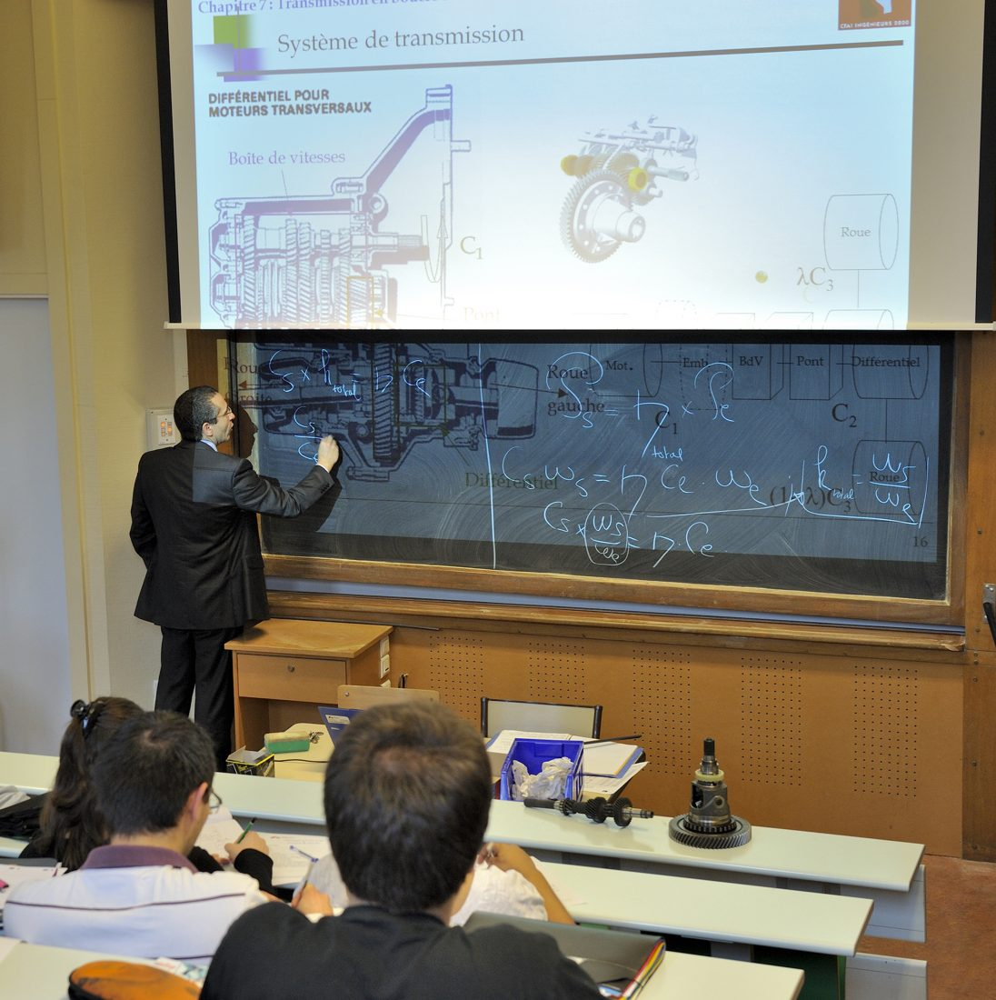
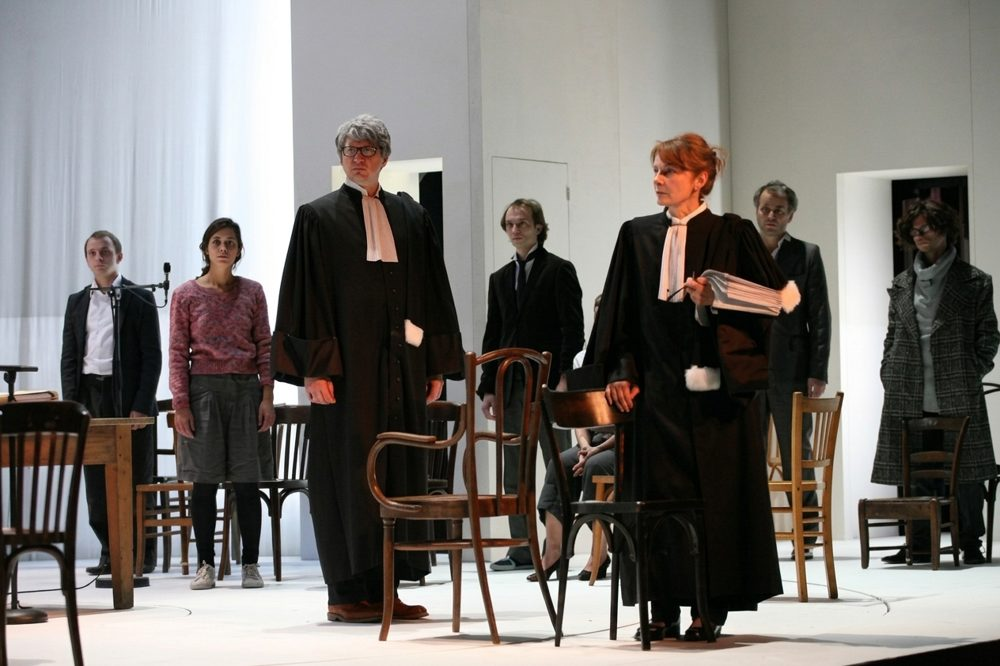

Emma Guinnepain

I grew up in Toulouse, surrounded by aeronautics, and I am now an apprentice engineer at Akkodis, working in avionic systems. What I bring: the rigour of a preparatory class, the autonomy of a university course, and the hands-on mindset of someone who runs her own handmade-product brand.
I chose the apprenticeship route to confront what I learn at ENSEEIHT with real engineering work, straight away.
Pitch video
To complete: upload your 3-minute English pitch to YouTube as “Unlisted”, then paste the embed here, replacing this box:
<iframe width="560" height="315" src="https://www.youtube.com/embed/VIDEO_ID" title="Elevator pitch" allowfullscreen></iframe>
At a glance
Now
3EA FISA at ENSEEIHT since September 2026, apprentice at Akkodis (avionic systems).
Before
Ranked 13th at the national Pass Ingénieur competition. CPGE PCSI, then L2 CUPGE Physics at Université Paul Sabatier.
Next
A 17-week international mobility within Akkodis, then either the space sector or a move towards technical sales.
More about me
Dual Academic Culture: CPGE + University
Two years in intensive preparatory classes (CPGE PCSI at Déodat de Sévrac) instilled mathematical rigor, rapid problem-solving, and resilience. Subsequent L2 CUPGE physics at Paul Sabatier nurtured intellectual autonomy and initiative.
Aeronautical DNA & Flight Culture
Holding the Brevet d’Initiation à l’Aéronautique (BIA) with flight trial experience in Blagnac, aviation is not just an industry to me: it is a passion for aerodynamics, cockpit instrumentation, and flight safety standards.
Entrepreneurial Drive & Concrete Execution
Founding a handcrafted brand in October 2025 gave me full ownership of product development: 3D CAD design, sustainable sourcing, quality assurance, cash flow, and automated logistics via Python.
Projects
Targeted pathway: Electronics, Electrical Engineering & Automation (3EA) – because I want theory and real systems to feed each other, and because avionics sits exactly at that junction.
1. Analogue amplifier – ENSEEIHT

Problem. Design and build a working amplifier, then improve it step by step.
My role and methods. We built it progressively on a breadboard, adding low-pass filters, voltage-to-current converters and follower (buffer) stages.
Tools. Breadboard prototyping, oscilloscope measurement, basic electronics and signal processing.
To complete: one measured result (gain, cut-off frequency) and one lesson learnt.
2. Avionic systems – Akkodis (apprenticeship)
To complete (sanitised, ask your tutor first): one line per mission with Situation, Task, Action (tools, e.g. Matlab, Simulink) and Result. No client names, figures or drawings covered by an NDA.
3. A handmade-object brand – since October 2025
I run it alone, from A to Z: marketing, sales, finance and customer relations. I design and produce each object, controlling sourcing, quality and logistics.
What it taught me: project management, autonomy, and the discipline of delivering something finished.
Career
The job ad I would apply for
Flight Qualities Engineer (f/m) – Airbus Commercial Aircraft, Toulouse, full-time, ref. JR10447460. The team ensures manoeuvrability, stability, safety and continued airworthiness of current and future aircraft.
How I match it
| The ad asks for | My evidence today |
|---|---|
| Modelling and simulation tools (Matlab, Simulink) | I use Matlab, Simulink and Python for system modelling and signal processing in my coursework and lab sessions, from CPGE and CUPGE to ENSEEIHT. I will keep deepening them in the 3EA control and signal modules. |
| Feedback loops and aircraft systems architecture | Control and automation are at the core of my 3EA curriculum, and my apprenticeship at Akkodis places me directly in avionic systems. My amplifier project already put feedback into practice, and my interview with an Airbus avionics architect showed me how requirements become certified architectures. |
| Flight mechanics | My BIA gave me a solid aeronautics and space culture, and I flew a test flight after obtaining it. Flight dynamics is my main learning goal; Airbus states it supports candidates who do not match 100%. |
| Fluent English and French | French is my mother tongue and my English is B2, a level I am working to bring to B2+ by S9. This portfolio, my CV and my cover letter are written in English, and my international mobility will accelerate that progress. |
| Proven professional experience | Not yet fully: my three-year apprenticeship at Akkodis, in avionic systems, is where I build it. I already bring autonomy from running my own brand since October 2025, and I have met two engineers from Airbus and Safran. |
My documents
My Job Glasses interviews
Interview 1: Sophie Delmas
Senior Avionics Architect & Flight Control Systems Lead, Airbus Commercial Aircraft, Toulouse
Why her. To understand how high-level flight-safety requirements become certified hardware and software embedded architectures (DO-178C / DO-254), and how an apprentice can quickly add value in systems testing.
What I learnt. “The biggest differentiator for young systems engineers is not just knowing how to code, but understanding system boundaries, failure mode effects (FMEA), and how electrical transients interact with digital flight computers.” Model-Based Systems Engineering (MBSE) with SysML is also becoming the main language across engineering teams.
What I will do next. Choose ENSEEIHT electives in embedded communication buses (ARINC 429, AFDX) and real-time systems, and explore open MBSE tools (Capella) during S6.
Interview 2: Marc Vasseur
R&D Power Electronics Lead (Hybrid Propulsion), Safran Electrical & Power, Blagnac
Why him. To investigate the technical bottlenecks facing hybrid-electric commercial aircraft, notably high-voltage DC distribution (HVDC) and wide-bandgap semiconductors (SiC / GaN).
What I learnt. Aircraft electrical systems are shifting from the standard 115 V AC / 28 V DC to 540 V DC and above. The main challenges are thermal dissipation at high altitude (Paschen’s law, partial discharge) and electromagnetic compatibility (EMC), more than raw converter efficiency.
What I will do next. Deepen my knowledge of thermal management and high-frequency magnetics in the 3EA S7 modules, and aim for an international mobility in a laboratory specialised in wide-bandgap converter design.
Two possible careers
Plan A: the space sector
Moving from space to aeronautics is usually the easier direction; the reverse is much rarer. So I would join the space sector after my apprenticeship, to keep both doors open instead of closing one of them.
Aeronautics has fascinated me since childhood, and my BIA already gave me a general aeronautics and space culture. Toulouse, where I grew up and study, is a European capital of space research, which makes this path very natural for me.

Plan B: technical sales
I enjoy dealing with people, and the idea of selling an ingenious product appeals to me. Many engineers have made this choice, and I would train in business to complete my technical background.
Running my own brand has already given me a taste of marketing, sales and customer relations. Tutoring taught me to understand people and explain things in their own words, which is exactly what a technical sales engineer does.
Mobility
My 17-week mobility will take place inside Akkodis, which operates in 30 countries. I am in avionics today and want to discover another department or sector. Akkodis supports apprentices abroad with two salary frameworks: one keeps the French salary where living costs are lower (e.g. Morocco), the other adapts it to local rules where they are much higher (e.g. Singapore).
Germany
Why: Germany is a leader in automotive engineering, and I can easily picture myself working on autonomous driving. It is a different industry from avionics, yet it relies on the same embedded electronics and control I am learning at ENSEEIHT.
It would let me apply my skills in a new sector and discover another engineering culture.
Morocco
Why: Morocco is an offshoring hub, notably for embedded engineering, which matches my training closely. It is also close to home, and living costs are lower, so I would keep my French salary under the Akkodis framework.
It would show me how projects are shared between international teams.
Singapore
Why: Singapore is Asia’s strategic hub for artificial intelligence, a field that is reshaping embedded and avionic systems. Working there would also be a chance to live in an English-speaking environment and push my English towards B2+.
Living costs are much higher, so my salary would follow local rules.
Also considered: Japan (advanced robotics) and Seattle (tech, but far from my training).
Company information
I have booked meetings with the people in charge of mobility at Akkodis, for my return to the company in February.
Passions

Aeronautics
A passion since childhood. Growing up in Toulouse, I was immersed in aeronautics every day. I hold the BIA (Brevet d’Initiation à l’Aéronautique) and did test piloting after obtaining it. It is the reason I chose this industry, and my apprenticeship in avionic systems feels like the natural next step.

Teaching
I love teaching and understanding people so that I can explain things in their own words. I tutored pupils (brevet, baccalauréat) and looked after young children, adapting each time to the difficulties of the person in front of me. Giving someone the tools they were missing to understand is what I enjoy most.

Making things
Creativity, innovation and the rigour of handwork. Since October 2025 I have designed and produced handmade objects for my own brand, from sourcing to quality control. Making something with my hands teaches me the same patience and precision I need at the lab bench.

Travel and cultures
I love cultural differences and meeting people who see things otherwise. Travelling is how I learn most about others and about myself, and it is a big reason why I look forward to my international mobility.
Civic Engagement
I chose to engage through education: sharing my path, and the options open to them, with younger pupils.
Égalité des chances association
I joined this association because I believe talent is everywhere, but information is not. I help young people academically and share my own path with them, so that they know the options open to them: preparatory classes, university, engineering schools, apprenticeships.
Having been through both CPGE and university myself, I can explain what each route is really like. It is very rewarding to help someone see that a door they thought closed is in fact open.

Interactive theatre: King Kong trial
At the start of the year, I took part in an interactive play that placed us in situations where offences had been committed. We then attended and took part in the trials, which confronted victims with offenders.
It was very instructive thanks to the judge, who presented the proceedings and explained the subtleties of justice along the way. I came out of it more aware of how facts, rights and responsibilities are weighed, and I really enjoyed being an active participant rather than a spectator.

Hours completed
- Égalité des chances, 7 October2 h
- Interactive theatre and King Kong mock trial3 h